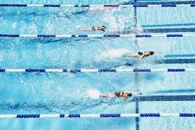

Swimming is an individual or team racing sport that requires the use of one's entire body to move through water. The sport takes place in pools or open water . Competitive swimming is one of the most popular Olympic sports, with varied distance events in butterfly, backstroke, breaststroke, freestyle, and individual medley. In addition to these individual events, four swimmers can take part in either a freestyle or medley relay. A medley relay consists of four swimmers who will each swim a different stroke, ordered as backstroke, breaststroke, butterfly and freestyle

Health benefits:
Swimming is a healthy activity that can be done by most people throughout their life. It is a low-impact workout that has several mental and bodily health benefits all while being a good recreational activity. Swimming builds endurance, muscle strength, and cardiovascular fitness. Correspondingly, it also improves weight loss while being a safer alternative of working out for someone who is injured or for women who are pregnant. Swimming requires less effort than other sports, but the athletes will get the results they are looking for.